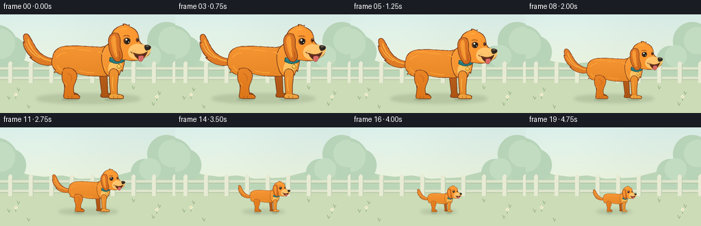
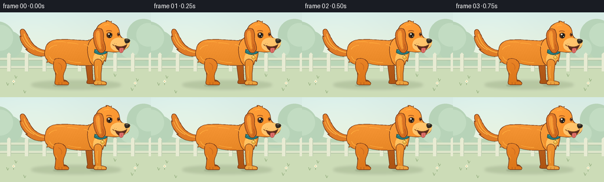

CODING AGENTS AS PIXEL WORLD MODELS
traex/GPT-6.1-Sol · instance_preservation_0048
点击播放 · 原生 RGB 像素
逐轮保存的候选
回放视频、检查图与代码变化。
每份候选均可单独播放。实际图片检查记录在下方工具轨迹中。
候选 01播放与检查图
点击播放 · 原生 RGB 像素


展开代码变化
--- 上一保存版本
+++ 本次保存版本
@@ -0,0 +1,191 @@
+from pathlib import Path
+import math
+import numpy as np
+from PIL import Image, ImageDraw, ImageFilter
+import artifact_io
+
+ROOT = Path(__file__).resolve().parent
+W, H, SS = 256, 144, 4
+
+def path(points, steps=14):
+ """Polygon from a compact set of move, line, cubic and quadratic commands."""
+ out=[]; cur=(0,0)
+ for cmd in points:
+ if cmd[0]=='M' or cmd[0]=='L':
+ cur=tuple(cmd[1:]); out.append(cur)
+ elif cmd[0]=='C':
+ a=cur; b=cmd[1:3]; c=cmd[3:5]; e=cmd[5:7]
+ for t in np.linspace(0,1,steps+1)[1:]:
+ u=1-t
+ out.append((u*u*u*a[0]+3*u*u*t*b[0]+3*u*t*t*c[0]+t*t*t*e[0],u*u*u*a[1]+3*u*u*t*b[1]+3*u*t*t*c[1]+t*t*t*e[1]))
+ cur=e
+ elif cmd[0]=='Q':
+ a=cur; b=cmd[1:3]; e=cmd[3:5]
+ for t in np.linspace(0,1,steps+1)[1:]:
+ u=1-t; out.append((u*u*a[0]+2*u*t*b[0]+t*t*e[0],u*u*a[1]+2*u*t*b[1]+t*t*e[1]))
+ cur=e
+ return out
+
+# The same hand-built character geometry is used in every frame.
+DARK=(116,57,26)
+def dog_sprite(wag=0):
+ sw,sh=660,445
+ im=Image.new('RGBA',(sw,sh))
+ yy,xx=np.mgrid[:sh,:sw]
+ def shape(commands, base, outline=DARK, width=3, shade=True):
+ pts=path(commands)
+ m=Image.new('L',(sw,sh)); md=ImageDraw.Draw(m); md.polygon(pts, fill=255)
+ if shade:
+ # Soft, stable light from the upper left, with a little fur grain.
+ light=16*np.exp(-((xx-300)/360)**2-((yy-145)/220)**2) - 19*(yy/sh) + 5*(1-xx/sw)
+ grain=0.65*np.sin(xx*.45+yy*.23)+0.45*np.sin(xx*1.2-yy*.7)
+ col=np.stack([np.clip(c+light+grain,0,255) for c in base],axis=-1).astype('uint8')
+ layer=Image.fromarray(col,'RGB').convert('RGBA'); layer.putalpha(m); im.alpha_composite(layer)
+ else:
+ ImageDraw.Draw(im).polygon(pts,fill=base)
+ if outline:
+ ImageDraw.Draw(im).line(pts+[pts[0]],fill=outline,width=width,joint='curve')
+ def line(commands, color, width=3):
+ ImageDraw.Draw(im).line(path(commands),fill=color,width=width,joint='curve')
+ def ellipse(box, color, outline=None, width=1):
+ ImageDraw.Draw(im).ellipse(box,fill=color,outline=outline,width=width)
+ # Feathered raised tail, behind the rump. Only its tip sways gently.
+ shape([('M',179,236),('C',126,236,94,210,76,174),('C',61,147,48+wag,119,38+wag,123),('C',19+wag,126,28+wag,150,31+wag,163),('L',25+wag,158),('C',25+wag,190,48,218,65,230),('L',54,228),('C',84,260,123,273,171,263),('C',188,258,195,244,179,236)],(220,120,35))
+ line([('M',46+wag,147),('C',58,195,99,239,154,246)],(250,172,61),6)
+ line([('M',38+wag,165),('C',53,205,81,224,101,232)],(255,188,81),3)
+ # Far legs establish all four limbs.
+ shape([('M',224,275),('C',247,282,253,309,248,344),('L',248,391),('C',271,390,282,402,274,411),('L',222,411),('Q',207,408,215,391),('L',208,326),('L',200,291)],(181,91,29))
+ shape([('M',374,267),('L',404,282),('L',409,393),('C',430,392,441,402,434,411),('L',386,411),('C',374,410,375,401,381,392),('L',370,306)],(185,96,30))
+ # Broad rounded torso, with small fur breaks in the silhouette.
+ shape([('M',159,228),('C',164,192,195,178,233,178),('C',284,175,345,184,382,183),('C',408,173,432,170,452,190),('C',479,222,475,272,449,298),('C',425,318,386,316,354,314),('C',310,316,283,307,264,302),('C',239,319,199,316,176,296),('L',165,299),('L',171,287),('C',153,272,151,250,159,228)],(234,137,40))
+ # Near rear leg and large paw.
+ shape([('M',208,282),('C',234,269,265,284,269,310),('C',271,333,254,352,253,373),('L',256,397),('C',280,397,288,410,279,417),('L',219,417),('Q',205,413,209,401),('L',214,358),('C',202,340,195,311,208,282)],(231,129,36))
+ line([('M',226,301),('Q',252,313,243,336)],(199,103,30),3)
+ line([('M',229,404),('L',229,414)],(154,78,28),2)
+ line([('M',245,404),('L',245,415)],(154,78,28),2)
+ # Neck and chest ruff.
+ shape([('M',386,200),('C',397,172,430,149,459,163),('C',487,181,491,240,480,270),('L',475,294),('L',469,286),('L',461,310),('L',455,302),('L',442,319),('C',420,328,397,308,390,283),('C',381,255,377,228,386,200)],(242,147,47))
+ # A cream-gold chest patch, following the same chest contours.
+ shape([('M',426,247),('C',444,245,467,248,473,264),('L',466,289),('L',459,284),('L',453,307),('L',445,301),('Q',421,320,410,288),('C',411,268,417,253,426,247)],(255,193,96),None)
+ # Near front leg and paw.
+ shape([('M',428,282),('C',441,278,457,287,458,301),('L',452,356),('L',452,397),('C',475,397,487,407,478,417),('L',421,417),('C',408,413,411,401,421,396),('L',417,345),('L',415,309),('Q',414,289,428,282)],(240,147,49))
+ shape([('M',420,398),('C',433,396,464,398,475,405),('Q',478,410,473,413),('L',422,414),('Q',415,411,420,398)],(248,175,74),None)
+ line([('M',435,405),('L',434,414)],(167,89,34),2)
+ line([('M',453,405),('L',453,414)],(167,89,34),2)
+ # Collar, dark piping, and a little round brass tag.
+ shape([('M',419,229),('C',443,244,465,244,481,230),('L',483,246),('C',463,263,437,260,416,246)],(35,121,126), (29,78,73),3)
+ line([('M',425,233),('C',443,245,465,247,478,239)],(84,174,165),3)
+ ellipse((457,256,462,266),(190,146,62),(114,81,30),1)
+ ellipse((450,262,469,281),(238,184,66),(155,103,29),2)
+ ellipse((453,264,462,272),(255,217,118))
+ # Main head: domed forehead with small characteristic forelock.
+ shape([('M',424,133),('C',429,105,457,86,481,84),('L',477,78),('Q',491,78,498,84),('L',507,81),('L',505,89),('C',534,98,548,116,550,147),('C',554,167,566,172,582,175),('C',609,184,607,210,587,223),('C',564,241,532,250,498,242),('C',460,243,436,221,426,195),('C',417,170,418,149,424,133)],(245,146,44))
+ # Far brow/eye is quiet, visible beyond the bridge.
+ ellipse((536,141,550,160),(131,64,26))
+ ellipse((542,143,549,154),(35,27,22))
+ ellipse((544,144,547,147),(255,237,196))
+ # Light muzzle: rounded jowl and nose bridge.
+ shape([('M',520,175),('C',537,164,552,170,575,172),('C',600,175,609,187,602,204),('C',597,221,575,234,553,238),('C',530,243,509,233,503,217),('C',498,200,506,183,520,175)],(255,194,106),None)
+ # Open mouth and tongue: dog rather than fox/cat.
+ shape([('M',526,208),('C',546,218,571,217,589,202),('C',584,222,570,238,550,239),('C',537,234,530,221,526,208)],(88,44,31),(114,57,28),2,False)
+ shape([('M',549,224),('C',557,221,567,220,571,224),('C',572,241,563,252,555,248),('C',548,246,547,235,549,224)],(224,111,107),(147,66,54),2,False)
+ line([('M',560,228),('L',558,242)],(183,80,76),2)
+ line([('M',512,204),('C',525,217,557,223,583,208)],(127,67,30),3)
+ # Soft black nose with a top-left reflected highlight.
+ shape([('M',579,174),('C',590,171,602,176,604,183),('C',605,192,591,201,583,198),('C',577,191,573,181,579,174)],(49,42,34),(59,42,29),2,False)
+ ellipse((580,176,595,182),(101,91,74))
+ ellipse((593,184,599,189),(27,25,23))
+ # The main expressive eye, with iris and two glints.
+ shape([('M',480,150),('C',486,137,503,138,511,148),('C',514,160,507,171,495,171),('C',485,170,480,163,480,150)],(113,62,26),None)
+ ellipse((485,143,509,169),(48,34,24))
+ ellipse((489,145,508,166),(80,48,25))
+ ellipse((493,144,507,166),(27,26,23))
+ ellipse((489,145,497,153),(255,249,222))
+ ellipse((501,158,505,162),(226,230,208))
+ line([('M',480,134),('Q',493,126,508,134)],(170,84,28),4)
+ # Floppy ear layered on top, unmistakable retriever silhouette.
+ shape([('M',445,119),('C',423,117,410,137,412,162),('C',412,189,423,225,440,243),('C',453,254,469,248,475,230),('C',480,211,463,188,465,168),('C',467,146,464,123,445,119)],(209,107,29))
+ shape([('M',438,130),('C',424,134,423,154,427,174),('C',431,199,440,225,448,232),('C',453,224,450,205,449,186),('C',445,161,450,140,438,130)],(238,143,43),None)
+ line([('M',439,144),('C',434,171,445,211,452,224)],(248,164,58),4)
+ line([('M',460,202),('Q',468,225,459,238)],(173,83,25),3)
+ # Restrained fur etching follows the volumes; avoids noisy outlines.
+ for a,b,c in [( (178,229),(194,210),(219,208)),((204,192),(238,186),(266,192)),((274,195),(310,196),(331,202)),((180,266),(188,285),(206,292)),((278,289),(316,301),(346,299)),((362,205),(380,205),(387,217)),((390,264),(394,279),(401,287))]:
+ line([('M',*a),('Q',*b,*c)],(255,172,62),3)
+ line([('M',214,342),('L',222,358)],(247,165,56),3)
+ line([('M',432,318),('Q',428,355,434,382)],(255,184,74),3)
+ line([('M',469,105),('Q',482,97,494,101)],(255,187,70),3)
+ for x,y in [(522,197),(531,199),(519,203)]: ellipse((x,y,x+2,y+2),(170,103,54))
+ return im
+
+def background():
+ ww,hh=W*SS,H*SS
+ y,x=np.mgrid[:hh,:ww]; yf=y/SS; xf=x/SS
+ top=np.array([214,235,230]); bottom=np.array([236,240,214])
+ mix=np.clip(yf/105,0,1)[...,None]
+ rgb=top*(1-mix)+bottom*mix
+ glow=6*np.exp(-((xf-55)/92)**2-((yf-28)/65)**2)
+ rgb=np.clip(rgb+glow[...,None],0,255).astype(np.uint8)
+ bg=Image.fromarray(rgb)
+ d=ImageDraw.Draw(bg)
+ def el(box,fill): d.ellipse(tuple(int(v*SS) for v in box),fill=fill)
+ def poly(pts, fill): d.polygon([(int(a*SS),int(b*SS)) for a,b in pts],fill=fill)
+ # Distant, muted treetops and a pale garden fence stay fixed.
+ poly([(0,80),(0,63),(20,62),(41,69),(64,72),(90,70),(117,75),(159,73),(190,65),(223,58),(256,68),(256,102),(0,102)],(187,213,183))
+ for bx,by,r in [(-6,47,32),(14,55,24),(243,39,28),(264,51,36),(211,66,20)]:
+ el((bx-r,by-r,bx+r,by+r),(183,211,184))
+ for bx,by,r in [(0,43,22),(251,38,20),(219,61,16)]:
+ el((bx-r,by-r,bx+r,by+r),(194,220,194))
+ poly([(0,95),(55,94),(110,94),(181,91),(256,96),(256,144),(0,144)],(204,220,183))
+ # Fence rails and posts give an unchanging reference for the shrinking dog.
+ for y0 in [77,91]:
+ d.rounded_rectangle((0,y0*SS,ww,(y0+4)*SS),radius=SS,fill=(222,229,202))
+ d.line((0,(y0+4)*SS,ww,(y0+4)*SS),fill=(176,195,162),width=SS)
+ for px in range(15,257,30):
+ poly([(px-3,100),(px-3,71),(px,68),(px+3,71),(px+3,100)],(232,235,211))
+ d.line(((px+3)*SS,72*SS,(px+3)*SS,100*SS),fill=(190,206,177),width=SS)
+ # Quiet grass and a few delicate daisies away from the silhouette.
+ for gx,gy in [(13,124),(27,112),(233,117),(224,133),(42,137),(195,109)]:
+ d.line((gx*SS,gy*SS,(gx-2)*SS,(gy-5)*SS),fill=(152,178,130),width=SS)
+ d.line((gx*SS,gy*SS,(gx+2)*SS,(gy-4)*SS),fill=(157,182,136),width=SS)
+ for gx,gy in [(23,123),(229,126)]:
+ d.line((gx*SS,gy*SS,gx*SS,(gy-6)*SS),fill=(149,177,129),width=SS)
+ for dx,dy in [(-1.5,0),(1.5,0),(0,-1.5),(0,1.5)]:
+ el((gx+dx-1,gy-6+dy-1,gx+dx+1,gy-6+dy+1),(249,246,222))
+ el((gx-.7,gy-6.7,gx+.7,gy-5.3),(224,184,79))
+ return bg
+
+def main():
+ bg=background()
+ frames=[]
+ for i in range(20):
+ # A short establishing hold, a smooth size transformation, a final hold.
+ t=np.clip((i-2)/15,0,1)
+ smooth=t*t*(3-2*t)
+ size=1-.66*smooth
+ scale=.322*size
+ sprite=dog_sprite(wag=4*math.sin(i*.64))
+ # Feet remain planted: this is actual shrinking, not a camera zoom.
+ new_w=round(sprite.width*scale*SS); new_h=round(sprite.height*scale*SS)
+ sprite=sprite.resize((new_w,new_h),Image.Resampling.LANCZOS)
+ left=round((132-330*scale)*SS); top=round((123-417*scale)*SS)
+ frame=bg.copy().convert('RGBA')
+ shadow=Image.new('RGBA',frame.size)
+ sd=ImageDraw.Draw(shadow)
+ cx=129*SS; cy=123*SS
+ rx=76*size*SS; ry=(6*size+1)*SS
+ sd.ellipse((cx-rx,cy-ry,cx+rx,cy+ry),fill=(85,108,68,48))
+ shadow=shadow.filter(ImageFilter.GaussianBlur(2.4*SS))
+ frame.alpha_composite(shadow)
+ contact=Image.new('RGBA',frame.size); cd=ImageDraw.Draw(contact)
+ for px in (237,432):
+ x=(132+(px-330)*scale)*SS
+ cd.ellipse((x-12*size*SS,122*SS,x+13*size*SS,126*SS),fill=(77,91,59,48))
+ contact=contact.filter(ImageFilter.GaussianBlur(.9*SS))
+ frame.alpha_composite(contact)
+ frame.alpha_composite(sprite,(left,top))
+ frame=frame.convert('RGB').resize((W,H),Image.Resampling.LANCZOS)
+ frames.append(np.asarray(frame,dtype=np.uint8))
+ artifact_io.save(np.stack(frames),ROOT)
+ print('Saved 20 RGB frames, 256x144 at 4 fps.')
+
+if __name__=='__main__': main()
可观测工具轨迹
实际执行的命令与返回图片。
命令 1exit 0
/bin/bash -lc "ls -la && cat prompt.txt && printf '\\n---RULES---\\n' && cat GENERATION_RULES.md && printf '\\n---SPEC---\\n' && cat task_spec.json"
命令 2exit 0
/bin/bash -lc "cat artifact_io.py && printf '\\n---\\n' && cat player_template.html"
命令 3exit 0
/bin/bash -lc "cat > generate.py <<'PY'
from pathlib import Path
import math
import numpy as np
from PIL import Image, ImageDraw, ImageFilter
import artifact_io
ROOT = Path(__file__).resolve().parent
W, H, SS = 256, 144, 4
def path(points, steps=14):
\"\"\"Polygon from a compact set of move, line, cubic and quadratic commands.\"\"\"
out=[]; cur=(0,0)
for cmd in points:
if cmd[0]=='M' or cmd[0]=='L':
cur=tuple(cmd[1:]); out.append(cur)
elif cmd[0]=='C':
a=cur; b=cmd[1:3]; c=cmd[3:5]; e=cmd[5:7]
for t in np.linspace(0,1,steps+1)[1:]:
u=1-t
out.append((u*u*u*a[0]+3*u*u*t*b[0]+3*u*t*t*c[0]+t*t*t*e[0],u*u*u*a[1]+3*u*u*t*b[1]+3*u*t*t*c[1]+t*t*t*e[1]))
cur=e
elif cmd[0]=='Q':
a=cur; b=cmd[1:3]; e=cmd[3:5]
for t in np.linspace(0,1,steps+1)[1:]:
u=1-t; out.append((u*u*a[0]+2*u*t*b[0]+t*t*e[0],u*u*a[1]+2*u*t*b[1]+t*t*e[1]))
cur=e
return out
# The same hand-built character geometry is used in every frame.
DARK=(116,57,26)
def dog_sprite(wag=0):
sw,sh=660,445
im=Image.new('RGBA',(sw,sh))
yy,xx=np.mgrid[:sh,:sw]
def shape(commands, base, outline=DARK, width=3, shade=True):
pts=path(commands)
m=Image.new('L',(sw,sh)); md=ImageDraw.Draw(m); md.polygon(pts, fill=255)
if shade:
# Soft, stable light from the upper left, with a little fur grain.
light=16*np.exp(-((xx-300)/360)**2-((yy-145)/220)**2) - 19*(yy/sh) + 5*(1-xx/sw)
grain=0.65*np.sin(xx*.45+yy*.23)+0.45*np.sin(xx*1.2-yy*.7)
col=np.stack([np.clip(c+light+grain,0,255) for c in base],axis=-1).astype('uint8')
layer=Image.fromarray(col,'RGB').convert('RGBA'); layer.putalpha(m); im.alpha_composite(layer)
else:
ImageDraw.Draw(im).polygon(pts,fill=base)
if outline:
ImageDraw.Draw(im).line(pts+[pts[0]],fill=outline,width=width,joint='curve')
def line(commands, color, width=3):
ImageDraw.Draw(im).line(path(commands),fill=color,width=width,joint='curve')
def ellipse(box, color, outline=None, width=1):
ImageDraw.Draw(im).ellipse(box,fill=color,outline=outline,width=width)
# Feathered raised tail, behind the rump. Only its tip sways gently.
shape([('M',179,236),('C',126,236,94,210,76,174),('C',61,147,48+wag,119,38+wag,123),('C',19+wag,126,28+wag,150,31+wag,163),('L',25+wag,158),('C',25+wag,190,48,218,65,230),('L',54,228),('C',84,260,123,273,171,263),('C',188,258,195,244,179,236)],(220,120,35))
line([('M',46+wag,147),('C',58,195,99,239,154,246)],(250,172,61),6)
line([('M',38+wag,165),('C',53,205,81,224,101,232)],(255,188,81),3)
# Far legs establish all four limbs.
shape([('M',224,275),('C',247,282,253,309,248,344),('L',248,391),('C',271,390,282,402,274,411),('L',222,411),('Q',207,408,215,391),('L',208,326),('L',200,291)],(181,91,29))
shape([('M',374,267),('L',404,282),('L',409,393),('C',430,392,441,402,434,411),('L',386,411),('C',374,410,375,401,381,392),('L',370,306)],(185,96,30))
# Broad rounded torso, with small fur breaks in the silhouette.
shape([('M',159,228),('C',164,192,195,178,233,178),('C',284,175,345,184,382,183),('C',408,173,432,170,452,190),('C',479,222,475,272,449,298),('C',425,318,386,316,354,314),('C',310,316,283,307,264,302),('C',239,319,199,316,176,296),('L',165,299),('L',171,287),('C',153,272,151,250,159,228)],(234,137,40))
# Near rear leg and large paw.
shape([('M',208,282),('C',234,269,265,284,269,310),('C',271,333,254,352,253,373),('L',256,397),('C',280,397,288,410,279,417),('L',219,417),('Q',205,413,209,401),('L',214,358),('C',202,340,195,311,208,282)],(231,129,36))
line([('M',226,301),('Q',252,313,243,336)],(199,103,30),3)
line([('M',229,404),('L',229,414)],(154,78,28),2)
line([('M',245,404),('L',245,415)],(154,78,28),2)
# Neck and chest ruff.
shape([('M',386,200),('C',397,172,430,149,459,163),('C',487,181,491,240,480,270),('L',475,294),('L',469,286),('L',461,310),('L',455,302),('L',442,319),('C',420,328,397,308,390,283),('C',381,255,377,228,386,200)],(242,147,47))
# A cream-gold chest patch, following the same chest contours.
shape([('M',426,247),('C',444,245,467,248,473,264),('L',466,289),('L',459,284),('L',453,307),('L',445,301),('Q',421,320,410,288),('C',411,268,417,253,426,247)],(255,193,96),None)
# Near front leg and paw.
shape([('M',428,282),('C',441,278,457,287,458,301),('L',452,356),('L',452,397),('C',475,397,487,407,478,417),('L',421,417),('C',408,413,411,401,421,396),('L',417,345),('L',415,309),('Q',414,289,428,282)],(240,147,49))
shape([('M',420,398),('C',433,396,464,398,475,405),('Q',478,410,473,413),('L',422,414),('Q',415,411,420,398)],(248,175,74),None)
line([('M',435,405),('L',434,414)],(167,89,34),2)
line([('M',453,405),('L',453,414)],(167,89,34),2)
# Collar, dark piping, and a little round brass tag.
shape([('M',419,229),('C',443,244,465,244,481,230),('L',483,246),('C',463,263,437,260,416,246)],(35,121,126), (29,78,73),3)
line([('M',425,233),('C',443,245,465,247,478,239)],(84,174,165),3)
ellipse((457,256,462,266),(190,146,62),(114,81,30),1)
ellipse((450,262,469,281),(238,184,66),(155,103,29),2)
ellipse((453,264,462,272),(255,217,118))
# Main head: domed forehead with small characteristic forelock.
shape([('M',424,133),('C',429,105,457,86,481,84),('L',477,78),('Q',491,78,498,84),('L',507,81),('L',505,89),('C',534,98,548,116,550,147),('C',554,167,566,172,582,175),('C',609,184,607,210,587,223),('C',564,241,532,250,498,242),('C',460,243,436,221,426,195),('C',417,170,418,149,424,133)],(245,146,44))
# Far brow/eye is quiet, visible beyond the bridge.
ellipse((536,141,550,160),(131,64,26))
ellipse((542,143,549,154),(35,27,22))
ellipse((544,144,547,147),(255,237,196))
# Light muzzle: rounded jowl and nose bridge.
shape([('M',520,175),('C',537,164,552,170,575,172),('C',600,175,609,187,602,204),('C',597,221,575,234,553,238),('C',530,243,509,233,503,217),('C',498,200,506,183,520,175)],(255,194,106),None)
# Open mouth and tongue: dog rather than fox/cat.
shape([('M',526,208),('C',546,218,571,217,589,202),('C',584,222,570,238,550,239),('C',537,234,530,221,526,208)],(88,44,31),(114,57,28),2,False)
shape([('M',549,224),('C',557,221,567,220,571,224),('C',572,241,563,252,555,248),('C',548,246,547,235,549,224)],(224,111,107),(147,66,54),2,False)
line([('M',560,228),('L',558,242)],(183,80,76),2)
line([('M',512,204),('C',525,217,557,223,583,208)],(127,67,30),3)
# Soft black nose with a top-left reflected highlight.
shape([('M',579,174),('C',590,171,602,176,604,183),('C',605,192,591,201,583,198),('C',577,191,573,181,579,174)],(49,42,34),(59,42,29),2,False)
ellipse((580,176,595,182),(101,91,74))
ellipse((593,184,599,189),(27,25,23))
# The main expressive eye, with iris and two glints.
shape([('M',480,150),('C',486,137,503,138,511,148),('C',514,160,507,171,495,171),('C',485,170,480,163,480,150)],(113,62,26),None)
ellipse((485,143,509,169),(48,34,24))
ellipse((489,145,508,166),(80,48,25))
ellipse((493,144,507,166),(27,26,23))
ellipse((489,145,497,153),(255,249,222))
ellipse((501,158,505,162),(226,230,208))
line([('M',480,134),('Q',493,126,508,134)],(170,84,28),4)
# Floppy ear layered on top, unmistakable retriever silhouette.
shape([('M',445,119),('C',423,117,410,137,412,162),('C',412,189,423,225,440,243),('C',453,254,469,248,475,230),('C',480,211,463,188,465,168),('C',467,146,464,123,445,119)],(209,107,29))
shape([('M',438,130),('C',424,134,423,154,427,174),('C',431,199,440,225,448,232),('C',453,224,450,205,449,186),('C',445,161,450,140,438,130)],(238,143,43),None)
line([('M',439,144),('C',434,171,445,211,452,224)],(248,164,58),4)
line([('M',460,202),('Q',468,225,459,238)],(173,83,25),3)
# Restrained fur etching follows the volumes; avoids noisy outlines.
for a,b,c in [( (178,229),(194,210),(219,208)),((204,192),(238,186),(266,192)),((274,195),(310,196),(331,202)),((180,266),(188,285),(206,292)),((278,289),(316,301),(346,299)),((362,205),(380,205),(387,217)),((390,264),(394,279),(401,287))]:
line([('M',*a),('Q',*b,*c)],(255,172,62),3)
line([('M',214,342),('L',222,358)],(247,165,56),3)
line([('M',432,318),('Q',428,355,434,382)],(255,184,74),3)
line([('M',469,105),('Q',482,97,494,101)],(255,187,70),3)
for x,y in [(522,197),(531,199),(519,203)]: ellipse((x,y,x+2,y+2),(170,103,54))
return im
def background():
ww,hh=W*SS,H*SS
y,x=np.mgrid[:hh,:ww]; yf=y/SS; xf=x/SS
top=np.array([214,235,230]); bottom=np.array([236,240,214])
mix=np.clip(yf/105,0,1)[...,None]
rgb=top*(1-mix)+bottom*mix
glow=6*np.exp(-((xf-55)/92)**2-((yf-28)/65)**2)
rgb=np.clip(rgb+glow[...,None],0,255).astype(np.uint8)
bg=Image.fromarray(rgb)
d=ImageDraw.Draw(bg)
def el(box,fill): d.ellipse(tuple(int(v*SS) for v in box),fill=fill)
def poly(pts, fill): d.polygon([(int(a*SS),int(b*SS)) for a,b in pts],fill=fill)
# Distant, muted treetops and a pale garden fence stay fixed.
poly([(0,80),(0,63),(20,62),(41,69),(64,72),(90,70),(117,75),(159,73),(190,65),(223,58),(256,68),(256,102),(0,102)],(187,213,183))
for bx,by,r in [(-6,47,32),(14,55,24),(243,39,28),(264,51,36),(211,66,20)]:
el((bx-r,by-r,bx+r,by+r),(183,211,184))
for bx,by,r in [(0,43,22),(251,38,20),(219,61,16)]:
el((bx-r,by-r,bx+r,by+r),(194,220,194))
poly([(0,95),(55,94),(110,94),(181,91),(256,96),(256,144),(0,144)],(204,220,183))
# Fence rails and posts give an unchanging reference for the shrinking dog.
for y0 in [77,91]:
d.rounded_rectangle((0,y0*SS,ww,(y0+4)*SS),radius=SS,fill=(222,229,202))
d.line((0,(y0+4)*SS,ww,(y0+4)*SS),fill=(176,195,162),width=SS)
for px in range(15,257,30):
poly([(px-3,100),(px-3,71),(px,68),(px+3,71),(px+3,100)],(232,235,211))
d.line(((px+3)*SS,72*SS,(px+3)*SS,100*SS),fill=(190,206,177),width=SS)
# Quiet grass and a few delicate daisies away from the silhouette.
for gx,gy in [(13,124),(27,112),(233,117),(224,133),(42,137),(195,109)]:
d.line((gx*SS,gy*SS,(gx-2)*SS,(gy-5)*SS),fill=(152,178,130),width=SS)
d.line((gx*SS,gy*SS,(gx+2)*SS,(gy-4)*SS),fill=(157,182,136),width=SS)
for gx,gy in [(23,123),(229,126)]:
d.line((gx*SS,gy*SS,gx*SS,(gy-6)*SS),fill=(149,177,129),width=SS)
for dx,dy in [(-1.5,0),(1.5,0),(0,-1.5),(0,1.5)]:
el((gx+dx-1,gy-6+dy-1,gx+dx+1,gy-6+dy+1),(249,246,222))
el((gx-.7,gy-6.7,gx+.7,gy-5.3),(224,184,79))
return bg
def main():
bg=background()
frames=[]
for i in range(20):
# A short establishing hold, a smooth size transformation, a final hold.
t=np.clip((i-2)/15,0,1)
smooth=t*t*(3-2*t)
size=1-.66*smooth
scale=.322*size
sprite=dog_sprite(wag=4*math.sin(i*.64))
# Feet remain planted: this is actual shrinking, not a camera zoom.
new_w=round(sprite.width*scale*SS); new_h=round(sprite.height*scale*SS)
sprite=sprite.resize((new_w,new_h),Image.Resampling.LANCZOS)
left=round((132-330*scale)*SS); top=round((123-417*scale)*SS)
frame=bg.copy().convert('RGBA')
shadow=Image.new('RGBA',frame.size)
sd=ImageDraw.Draw(shadow)
cx=129*SS; cy=123*SS
rx=76*size*SS; ry=(6*size+1)*SS
sd.ellipse((cx-rx,cy-ry,cx+rx,cy+ry),fill=(85,108,68,48))
shadow=shadow.filter(ImageFilter.GaussianBlur(2.4*SS))
frame.alpha_composite(shadow)
contact=Image.new('RGBA',frame.size); cd=ImageDraw.Draw(contact)
for px in (237,432):
x=(132+(px-330)*scale)*SS
cd.ellipse((x-12*size*SS,122*SS,x+13*size*SS,126*SS),fill=(77,91,59,48))
contact=contact.filter(ImageFilter.GaussianBlur(.9*SS))
frame.alpha_composite(contact)
frame.alpha_composite(sprite,(left,top))
frame=frame.convert('RGB').resize((W,H),Image.Resampling.LANCZOS)
frames.append(np.asarray(frame,dtype=np.uint8))
artifact_io.save(np.stack(frames),ROOT)
print('Saved 20 RGB frames, 256x144 at 4 fps.')
if __name__=='__main__': main()
PY
python generate.py"命令 4exit 0
/bin/bash -lc "python - <<'PY'
from pathlib import Path
import numpy as np
from PIL import Image
p=Path('.')
a=np.load(p/'pixels.npz')['pixels']
assert a.shape==(144,256,20)
assert len(list((p/'frames').glob('*.png')))==20
for f in (p/'frames').glob('*.png'):
im=Image.open(f)
assert im.size==(256,144) and im.mode=='RGB'
for name in ['generate.py','pixels.npz','index.html','inspection.png','transition_check.png']:
assert (p/name).is_file()
print('Verified all required artifacts and RGB frame dimensions.')
PY
command -v ffmpeg || true"保存候选 1 份；完成命令 4 次；可验证图片返回 0 张。原始 API 响应与完整日志保留在本地。